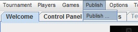

Publish menu

Publish ...
Clicking the Publish menu item gives the following three tabs :
Contents
: defines contents
Parameters
: defines what actions publish buttons will launch
Publish
: launches Print or Export actions